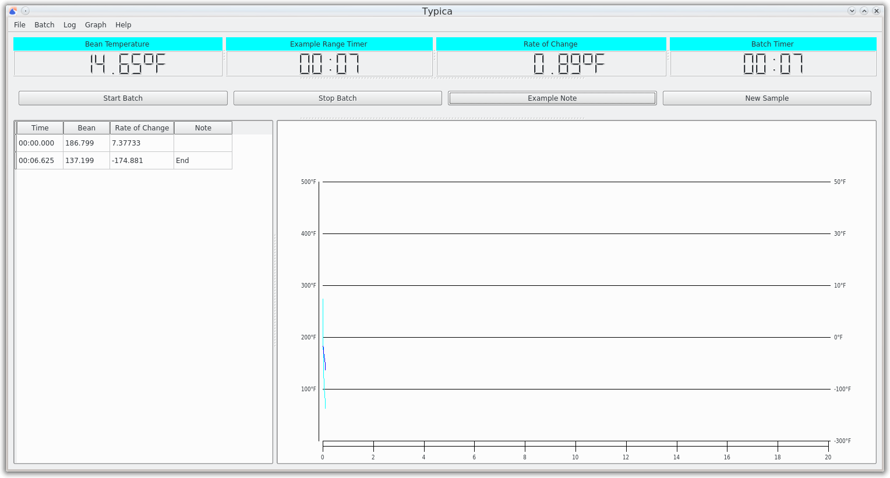
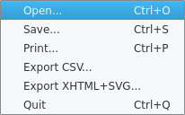
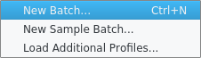
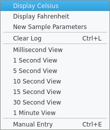

The Logging View
The appearance of the logging view depends on how the selected roaster was configured, but there are a few main areas where different interface items are located.
The window title will change to reflect a loaded target roast profile and can provide the name of the coffee being roasted.
The menu bar provides access to a number of operations such as saving or loading data on disk, entering new batch information, clearing recorded data, changing how data is displayed, and more. Note that on a Mac the menu bar will be at the top of the screen and not within the window as is normal on that platform.
Continuing down the window is the indicator panel. This is where current temperature indicators, rate of change information, and timers will be displayed. The number, type, and order of indicators depends on the roaster configuration. There are splitter handles between each indicator which can be used to control the width of each indicator. The last indicator should always be the batch timer. If you don't see this, there should be a splitter handle to the right of the last visible indicator which can be dragged left to reveal additional indicators. A splitter handle at the bottom can be used to control the height of all indicators.
Next is a row of buttons. At minimum this will include buttons for starting and stopping the batch, but a number of other controls for inserting notes in the log can also be configured to appear here. Under these buttons is another splitter handle that can be used to control the height of to table and graph below.
Below this and on the left is a table view showing times, temperatures, and notes for both a target profile if one is loaded and the current batch if one is being recorded.
To the right of the table view is a graph showing both loaded target profiles, if any, and current batch data.
Buttons
Start Batch
This button starts recording roasting data. If the New Batch or New Sample Batch windows were used, the roasting data can be associated with a batch in the database. Clicking this will also start the batch timer from 00:00, start any other timers that have been configured to start from the start of the batch, and create any annotations that have been configured for entry at the start of the batch if any.
Stop Batch
This button stops the batch timer, stops recording roasting data, and if the New Batch or New Sample Batch windows were used, the window with data associated with the finished batch will be raised.
Additional Buttons
Additional buttons and controls will appear if these have been configured.
The File Menu
Open...
This can be used to load roasting data previously saved to disk. This is mainly useful when receiving roasting data that has been shared from another roaster. In normal use it is much better to use information saved to the database instead of managing files manually.
Save...
This can be used to save roasting data to disk. This is mainly useful to share roasting data with another person using Typica. For other uses it is much better to use the New Batch and New Sample Batch windows to have roasting data saved to the database.
Print...
This can be used to print roasting data. The print window will appear, allowing the information printed to be customized.
Export CSV...
This can be used to export roasting data as a CSV file which can be opened in all popular spreadsheet applications or used with a wide variety of other tools. If this is something that you frequently require, it may be a good idea to reach out to the author with your use case and see if there is a way to do what you want within Typica or if Typica should be extended to support your use case.
Export XHTML+SVG
This can be used to produce the same information that can be printed, but produces that as an XHTML+SVG document.
Quit
On some platforms this might be called Exit and on the Mac this will be moved under the Typica menu. It is used to quit Typica.
The Batch Menu
New Batch...
This is the preferred way to enter the details of a production roast such that recorded roasting data can be associated with a batch and green coffee inventory can be adjusted. Selecting this will open the New Batch window.
New Sample Batch...
When roasting a green coffee not in inventory such as pre-purchase samples, you can use this menu item to open the New Sample Batch window and associate the roasting data with additional information about the coffee.
Load Additional Profiles...
If you do not have a target roast profile for the roasted coffee item you are producing but have a batch that you would like to have available for reference previously saved in the database, you can use this menu item to load that information as a target roast profile.
The Log Menu
Display Celsius
This menu item can be used to change displayed temperature measurements to Celsius.
Display Fahrenheit
This menu item can be used to change displayed temperature measurements to Fahrenheit.
New Sample Parameters
If a Counting Button has been configured, this menu item will be available to change the annotation text or reset the number used in annotations when that button is activated.
Clear Log
This menu item removes all information currently visible in the table and graph views.
Millisecond View
1 Second View
5 Second View
10 Second View
15 Second View
30 Second View
1 Minute View
These items affect the table view. The millisecond view will show every measurement in the table while the other views will limit the entries shown to one per indicated interval with the exception of times associated with an annotation which will always be shown regardless of the selected view.
Manual Entry
This can be used for entering roasting data collected when not connected to a roaster. The utility of this feature is somewhat limited and generally not worth using.
The Graph Menu
Reset Translation
If the roaster in use has been configured to use roast profile translation, this item can be used to reset any currently applied translation transformation in the graph.